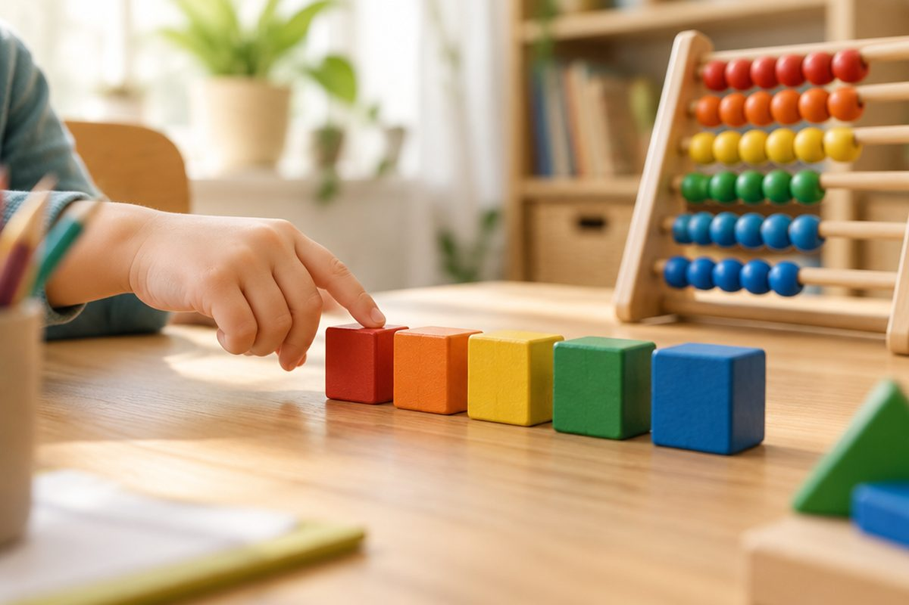

중국어로 하나부터 열까지 셀 수 있을까?

계단을 오를 때, 사탕을 나눌 때 우리는 숫자를 세요. 중국어 숫자 열 개만 알면 나이도, 전화번호도 말할 수 있어요. 손가락을 펴고 같이 세어 봐요!
一, 二, 三은 줄의 개수예요
一(yī, 이)은 1, 二(èr, 얼)은 2, 三(sān, 싼)은 3이에요.
세 글자는 가로줄 개수가 숫자와 같아요. 줄 하나는 1, 줄 둘은 2, 줄 셋은 3이라서 쉽게 외울 수 있어요.
二(èr)는 혀끝을 살짝 말아 올리며 '얼'처럼 소리 내요.
一(yī) / 二(èr) / 三(sān)
四, 五, 六
四(sì, 쓰)는 4, 五(wǔ, 우)는 5, 六(liù, 리우)는 6이에요.
四(sì)는 4성으로 뚝 떨어지고, 혀끝을 윗니 뒤에 대고 '쓰'라고 해요. 열을 뜻하는 十(shí, 스)과 헷갈리지 않게 조심해요.
五(wǔ)는 3성이라 낮게 눌렀다가 살짝 올려요.
四(sì) 4 / 五(wǔ) 5 / 六(liù) 6
七, 八, 九, 十 그리고 零
七(qī, 치)는 7, 八(bā, 빠)는 8, 九(jiǔ, 지우)는 9, 十(shí, 스)은 10이에요.
아무것도 없는 0은 零(líng, 링)이라고 해요. 전화번호를 말할 때 자주 써요.
十(shí)은 혀를 말아 2성으로 올리며 '스', 四(sì)는 혀를 펴고 4성으로 내리며 '쓰'예요.
七(qī) 7 / 八(bā) 8 / 九(jiǔ) 9 / 十(shí) 10 / 零(líng) 0
중국에서는 한 손으로 열까지 세요
중국 사람들은 한 손으로 1부터 10까지 나타내요. 1~5는 우리처럼 손가락을 펴요.
六은 엄지와 새끼손가락만 펴고, 七은 엄지·검지·중지 끝을 모아요. 八은 엄지와 검지를 펴서 'ㄴ' 모양을 만들고, 九는 검지를 갈고리처럼 구부려요.
十은 두 검지를 십자로 겹치거나 주먹을 쥐어 나타내요. 시장에서 값을 말할 때 자주 써요.
六(liù) / 七(qī) / 八(bā)은 엄지+검지 'ㄴ' 모양
핵심 낱말
- 一 二 三
- yī èr sān. 1, 2, 3. 가로줄 개수가 숫자예요.
- 四와 十
- sì(4)와 shí(10). 소리가 비슷해 헷갈리기 쉬워요.
- 零
- líng(링). 숫자 0
- 손가락 숫자
- 중국에서 한 손으로 1~10을 나타내는 방법
꼭 알아야 할 표현
| 零 | 0 | líng (링) |
| 一 | 1, 하나 | yī (이) |
| 二 | 2, 둘 | èr (얼) |
| 三 | 3, 셋 | sān (싼) |
| 四 | 4, 넷 | sì (쓰) |
| 五 | 5, 다섯 | wǔ (우) |
| 六 | 6, 여섯 | liù (리우) |
| 七 | 7, 일곱 | qī (치) |
| 八 | 8, 여덟 | bā (빠) |
| 九 | 9, 아홉 | jiǔ (지우) |
| 十 | 10, 열 | shí (스) |
한 줄 정리
- 一(yī) 二(èr) 三(sān) 四(sì) 五(wǔ) 六(liù) 七(qī) 八(bā) 九(jiǔ) 十(shí), 그리고 0은 零(líng)이에요.
- 四(sì, 4성)와 十(shí, 2성)은 소리가 비슷하니 성조와 혀 모양으로 구별해요.
- 중국에서는 한 손의 손가락 모양으로 6~10도 나타내요.
학교 교육과정 연결 (가정 학습 과정)
초등학교 정규 교육과정에는 중국어가 없어요. 처음 배우는 아이를 위한 가정 학습용 입문 단원이에요.
참고한 자료
- 汉语拼音方案 (한어 병음 방안, 1958년 중국 전국인민대표대회 승인) — 병음·성조 표기 기준